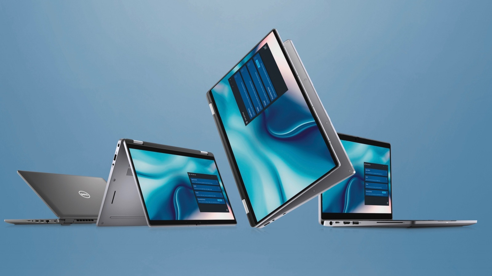

Introducing the Collaboration Touchpad Meet the new 9330, Latitude’s first 13” ultra-premium 2-in-1 designed for the best collaboration and connectivity.
- Make the world your workplace with the industry's most intelligent* and secure* PCs with built-in AI.
- Intelligent privacy Work securely from anywhere with all new intelligent privacy features like Onlooker Detection and Look Away Detect.
- Collaboration & connectivity Intelligent Audio eliminates background noise from all participants with Neural Noise Cancellation. Always look good with FHD IR cameras with dual sensors and temporal noise reduction.
- Powerful performance tune for the perfect balance or performance, cooling and battery run time with Dell Optimizer. Handle multi-tasking demands with intel vPro with 12th Gen Intel.
Dell Technologies
1404 Park Center DR.
Austin, TX 78754
1(800)624-9897
1404 Park Center DR.
Austin, TX 78754
1(800)624-9897